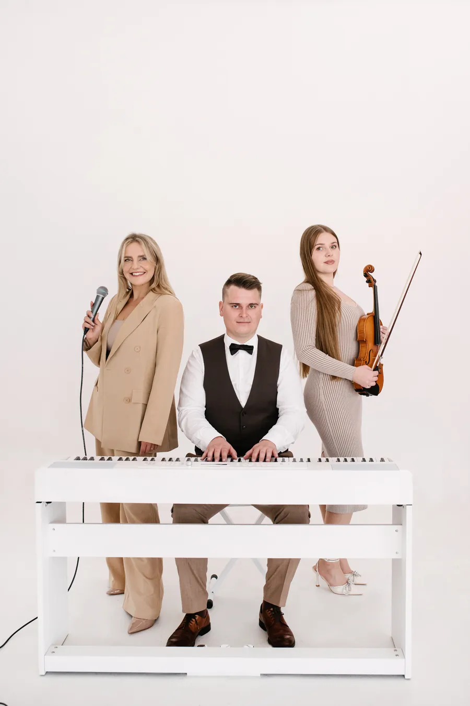
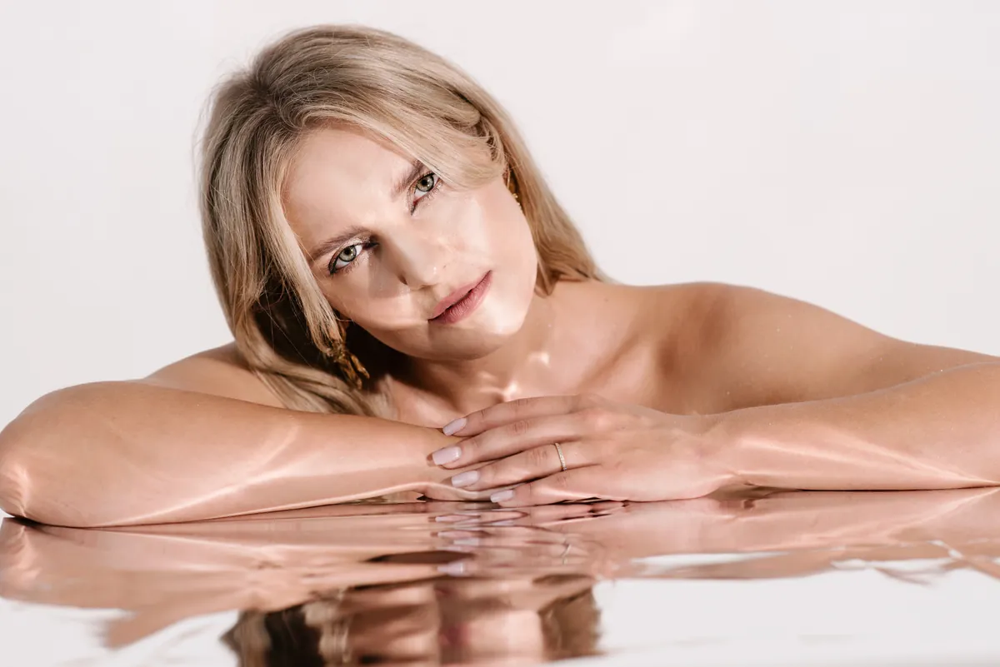
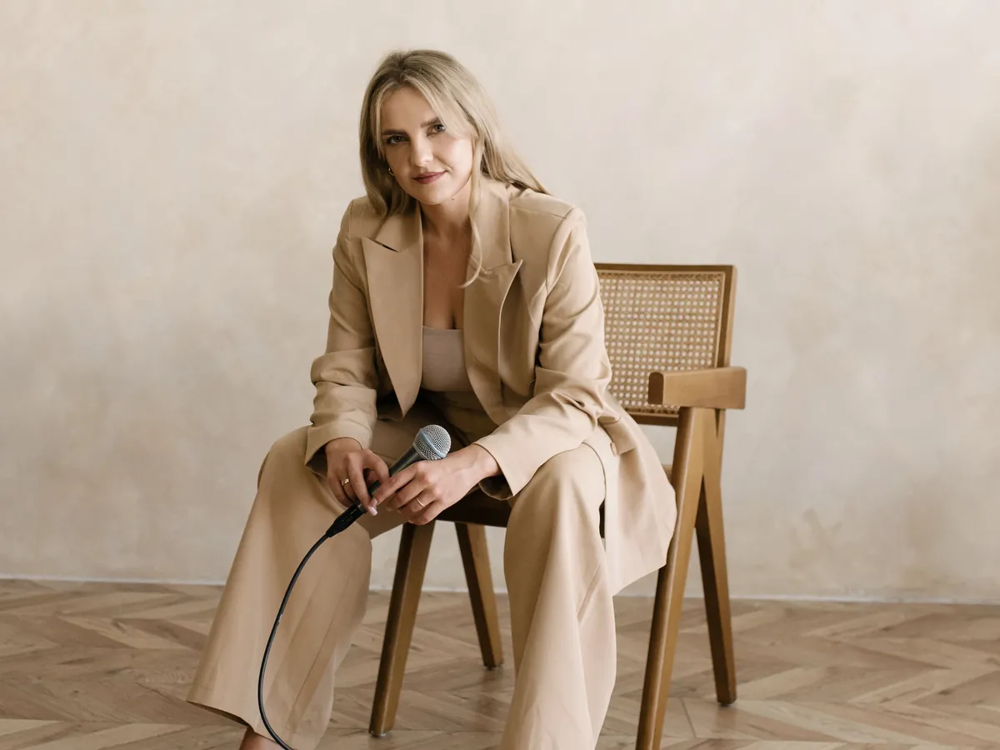

„Masz przepiękny głos. Za każdym razem, kiedy Cię słucham, mam ciarki. Jest w Twoim śpiewie coś takiego, co naprawdę potrafi chwycić za serce.”
Wokalistka • oprawa muzyczna • koncertyMartina
Martina
Bernacka
Każda chwila ma swoją melodię.
A ja uwielbiam być częścią tych, które zostają z nami na dłużej. Od kameralnych uroczystości po wielkie sceny.


Kilka słów o mnie
Cześć, jestem Martina!
Muzyka towarzyszy mi od zawsze i chyba nie wyobrażam sobie, żeby mogło być inaczej! Śpiewanie daje mi ogromną radość, ale jeszcze większą daje mi możliwość dzielenia się nią z innymi.
Uwielbiam te wszystkie emocje, które pojawiają się podczas występów. Czasem jest to wzruszenie podczas kameralnej uroczystości, innym razem energia, którą czuć ze sceny podczas koncertu. I właśnie za tę różnorodność tak bardzo kocham to, co robię!
Na co dzień współpracuję ze wspaniałymi muzykami, z którymi tworzymy oprawy muzyczne i koncerty w różnych składach. Każde wydarzenie jest inne, dlatego do każdego podchodzę indywidualnie.
Bo dla mnie muzyka to nie tylko dźwięki. To przede wszystkim ludzie, emocje i wspólne chwile, które później wspomina się z uśmiechem.
Moja oferta
Każda chwila ma swoją melodię.
Wyjątkowe uroczystości, kameralne spotkania i koncerty. Muzyka dopasowana do Waszych oczekiwań, charakteru wydarzenia i emocji, które chcecie przekazać.
Galeria
Chwile w kadrze.






WASZE OPINIE
Słowa, które zostają na długo.
Najpiękniejszą częścią tego, co robię, są emocje, które możemy przeżywać razem. A takie wiadomości są dla mnie czymś naprawdę wyjątkowym.
„Przy Tobie naprawdę można mieć pewność, że nawet najśmielsze pomysły są możliwe, bo dla Ciebie nie ma rzeczy niemożliwych!”
„Masz ogromny talent, niesamowite wyczucie i przede wszystkim serce do tego co robisz.”
„Wiele osób mówiło nam po mszy, że była to najpiękniejsza ceremonia, w jakiej kiedykolwiek uczestniczyli.”
„Twój głos stworzył w kościele niesamowitą, wzruszającą atmosferę i sprawił, że ta wyjątkowa chwila była jeszcze piękniejsza.”
„To było coś pięknego... Goście byli bardzo wzruszeni, my również bardzo, bardzo. Wylałam tyle łez ze wzruszenia.”
„Wszyscy byli zachwyceni i do dziś słyszę same komplementy na Twój temat.”
„Kiedy szłam do ołtarza z tatą miałam ciarki, a łzy cisły się mocno do oczu.”
„Naprawdę nie mogliśmy wybrać lepszej osoby do oprawy – było po prostu magicznie.”
„BYŁO PRZEPIĘKNIE! Dziękujemy z całego serca! Jesteś najlepsza.”
„Całą mszę wytrzymałem ale ostatnia piosenka mnie rozkleiła totalnie.”
„Dzięki Tobie ceremonia była przepiękna … kilka razy zupełnie się popłakałam słuchając jak śpiewasz.”
„Przepięknie śpiewasz i wszystkim gościom się bardzo podobało.”
„Martina dziękujemy za przepiękną oprawę … było cudownie!”
„Nie mogłam sobie tego lepiej wymarzyć.”
„Goście zachwyceni, my zachwyceni, dodaliście magii tej ceremonii!”
Kontakt i rezerwacje
Stwórzmy coś pięknego.
Planujesz uroczystość, koncert lub wydarzenie? Opowiedz mi o swoim pomyśle. Chętnie przygotuję indywidualną propozycję muzyczną.
Działam na terenie całej Polski